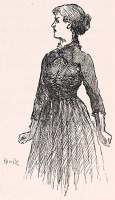

"Mary Jane was red-headed, but that don't make no
difference, she was most awful beautiful. . . and my, but she was
handsome! . . . You may say what you want to, but in my opinion
she had more sand in her than any girl I ever see; in my opinion
she was just full of sand. It sounds like flattery, but it ain't
no flattery. And when it comes to beauty -- and goodness too --
she lays over them all."